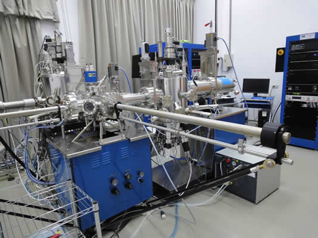

| 繁體中文 | English |
II-VI compound semiconductor molecular beam epitaxy system
Prof. Wu-Ching Chou’s molecular beam epitaxy system has two chambers for the growth of ZnO–based and GaN-based photonics and magnetic semiconductors. The research topics include: spin dynamics and magnetic polaron in magnetic quantum dots, carrier recombination dynamics in ternary photonic semiconductors, ferromagnetism in magnetic semiconductors etc.

Above picture shows the molecular beam epitaxy system for the growth of ZnO–based and GaN-based photonics and magnetic semiconductors
[MBE operating video]
Chinese ver. (InSe)
English ver. (GaO)
Vietnamese ver. (Alloy Process)
Source: Zn, Mn, Cr, Se, Mg, Cd, Te, ZnCl2, O2, N2, Ga, In
We can fabricate binary and ternary compound semiconductors.
Binary compounds: ZnO, ZnSe, ZnTe, CdO, CdSe, CdTe
Ternary compound: ZnSeO, ZnMnO, ZnMgO, ZnMnSe, ZnMnTe, ZnSeTe, CdMnSe, CdMnTe, etc……
2-D quantum wells and 0-D quantum dots: ZnO/ZnMgO, ZnTe/ZnMnSe, ZnMnTe/ZnMgSe, CdMnTe/ZnTe, ZnCdSe/ZnSe, etc……